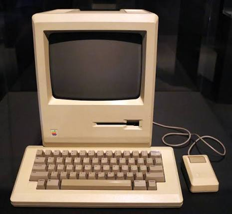
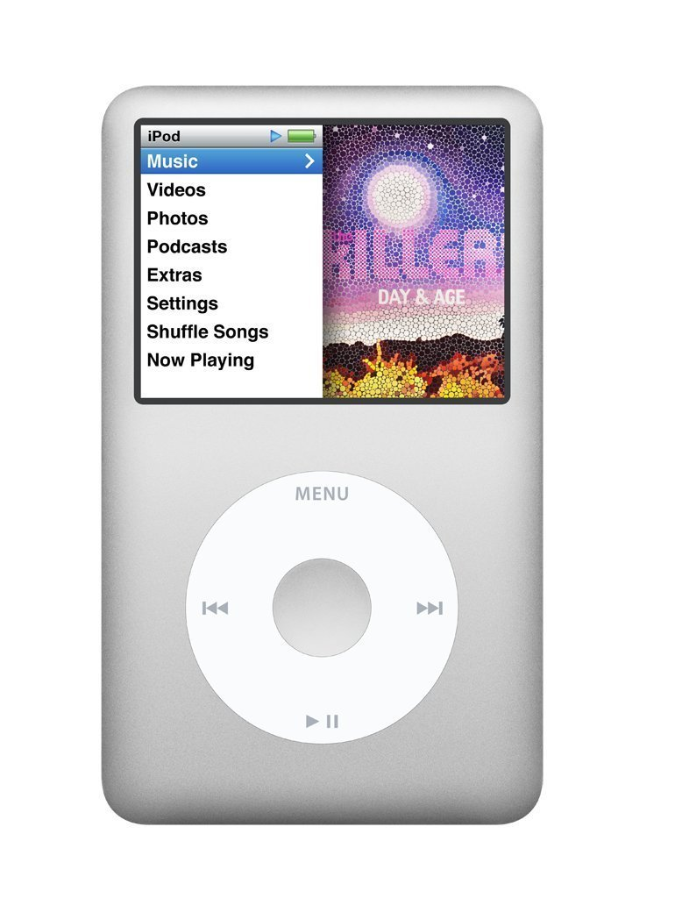
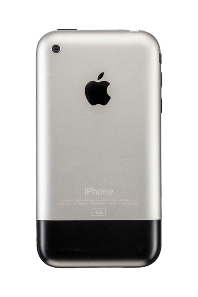

1955
Born
Hello, welcome to
Co-founder of Apple, visionary entrepreneur, and pioneer of personal technology. His ideas changed the way people interact with technology and the world around them.
San Francisco, California
1955 - 2011

Who was he?
Steve Jobs was an American entrepreneur, inventor, and co-founder of Apple Inc. He played a major role in the development of personal computers, smartphones, and digital entertainment.
Known for his focus on simplicity, creativity, and innovation, Jobs believed that technology should be powerful, accessible, and easy to use.
Born
Apple Founded
Legacy Continues
Core Principles
The principles and areas of innovation that shaped Steve Jobs' work.
Thinking beyond existing possibilities.
Making technology simple and beautiful.
Creating products that shape everyday life.
Connecting ideas in unexpected ways.
Removing unnecessary complexity.
Inspiring teams to achieve ambitious goals.
Seeing opportunities before others do.
Presenting ideas in a clear and memorable way.
His Journey
Steve Jobs, Steve Wozniak, and Ronald Wayne founded Apple Computer.
Apple introduced the Macintosh, bringing a graphical user interface to a wider audience.
After leaving Apple, Jobs founded NeXT, a company focused on advanced computers for education and business.
Apple acquired NeXT, and Steve Jobs returned to the company he had helped create.
Innovation in Action
Some of the products that changed the world of technology.

A personal computer that helped bring graphical computing to more people.
Learn More
A portable music player that transformed the way people listened to music.
Learn More
A revolutionary mobile phone that combined an iPod, a phone, and an internet communicator.
Learn MoreImpact & Words
Words and phosophies that continue to inspire creators and innovators around the world.
"Design is not just what it looks like and feels like. Design is how it works."
"Stay hungry. Stay foolish. Follow your heart and intuition."
Explore Further
Want to learn more about Apple's history, keynotes, and design philosophy?